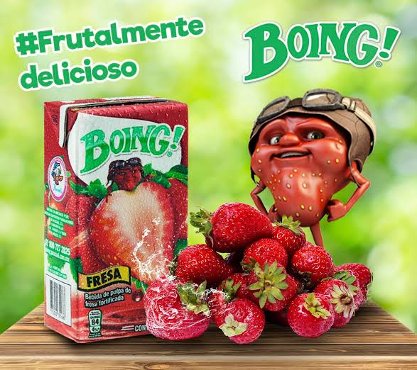
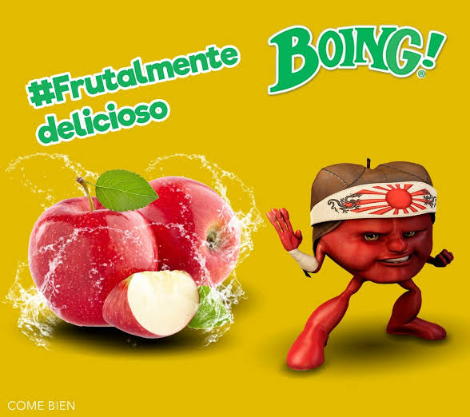
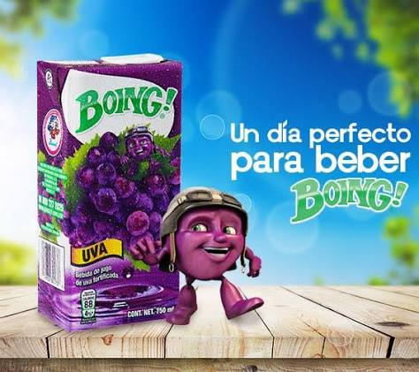
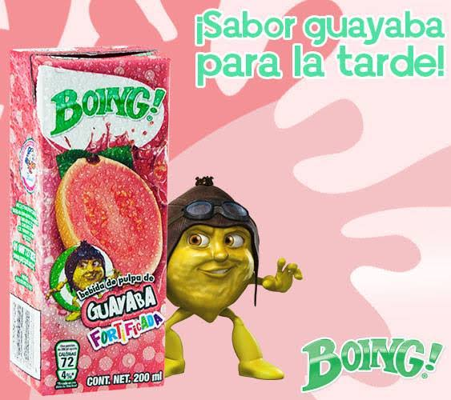
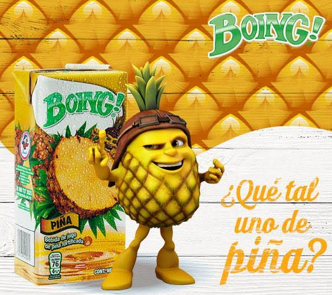
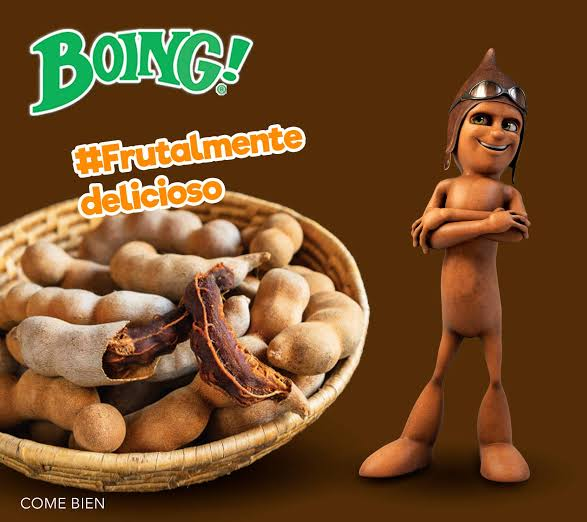
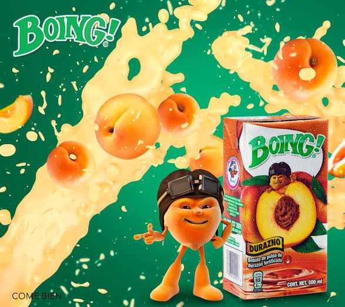
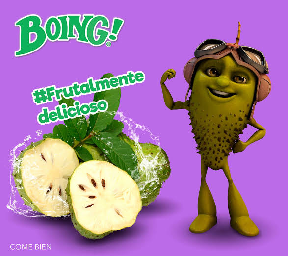

Mango
Mangón
Es uno de los personajes más icónicos y de mayor tamaño dentro de las colecciones. En su versión original de los 90 vestía un sombrero típico.
Los personajes frutales ayudan a que cada sabor tenga una identidad visual reconocible. Algunos nombres se han documentado en campañas recientes; no todos los personajes cuentan con un nombre público confirmado.
Es uno de los personajes más icónicos y de mayor tamaño dentro de las colecciones. En su versión original de los 90 vestía un sombrero típico.

Visualmente destaca por sus característicos puntos(aquenios) y su intenso color rojo. En los años 90 portaba una corona y un bastón real.

Una manzana roja impecable de aspecto robusto.

Es un pequeño racimo de uvas de color morado brillante. En los comerciales clásicos solía llevar un gorrito de piloto de carreras o aviador.

Representa a uno de los sabores más tradicionales y vendidos de México. Su diseño resalta la silueta clásica de la guayaba con texturas rugosas en el molde.
Una naranja redonda de gajos marcados y mirada entusiasta.

Una figura robusta que destaca por su corona de hojas verdes y la armadura texturizada de su cáscara.

Tiene una silueta alargada, café y curveada que imita fielmente a la vaina del tamarindo.

Una figura de piel lisa y tonos pastel anaranjados. Fue de las últimas piezas añadidas para cerrar la transición hacia las colecciones de los 2000.

De color verde claro y cubierto por espinas suaves simuladas en el plástico duro del juguete.
Fuentes: MiMorelia — edición especial Día de Muertos · Merca2.0 — evolución de las mascotas y diseño de Boing! .